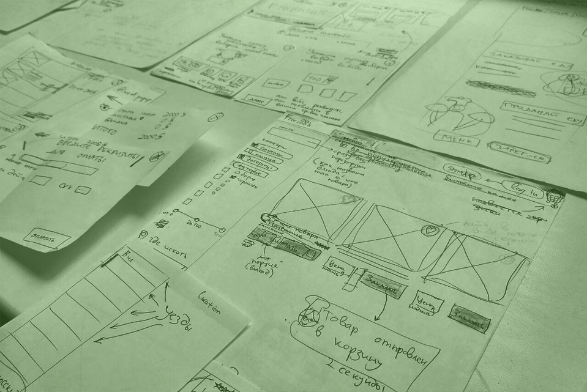
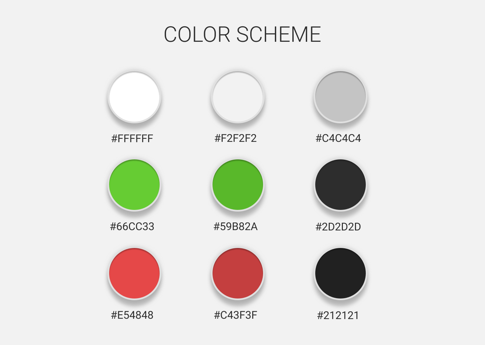
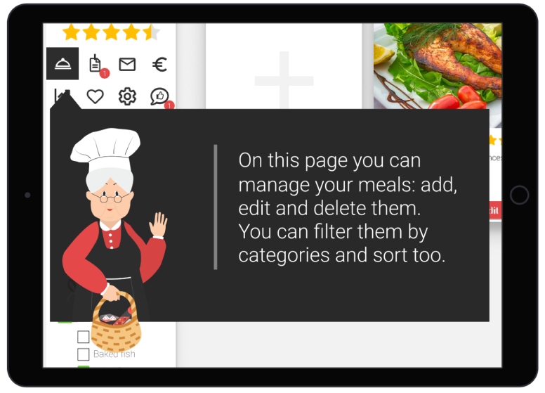
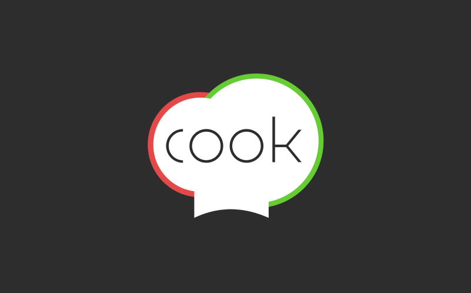
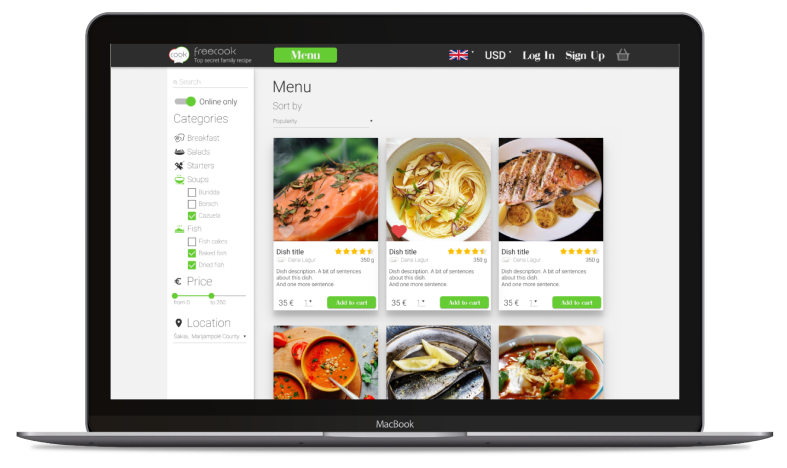
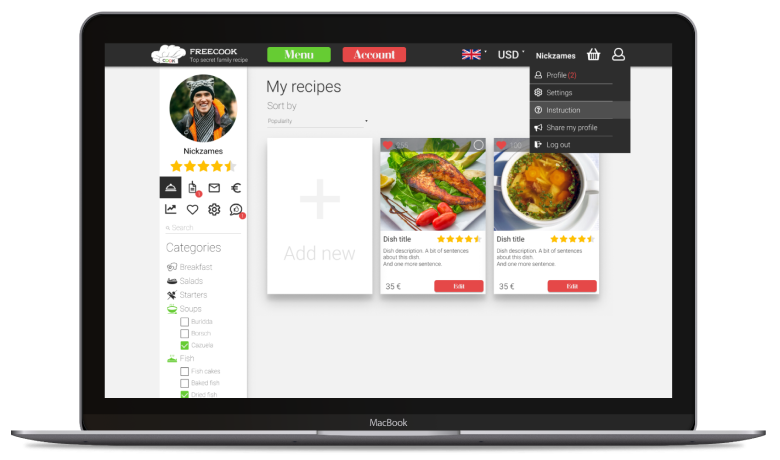
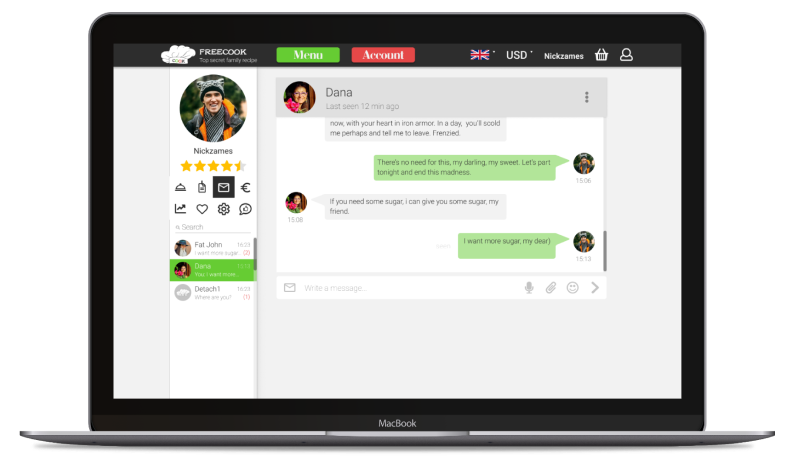
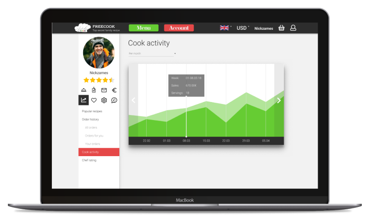
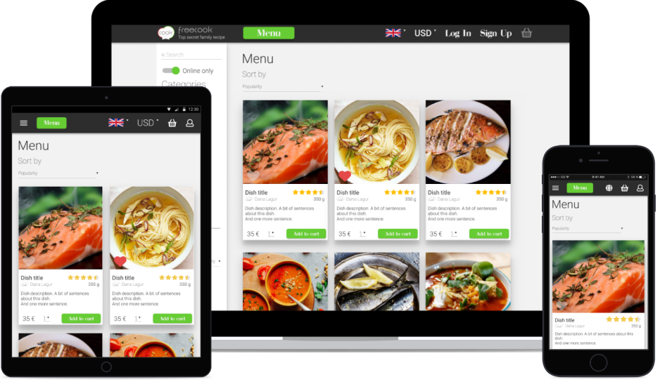

Задача: спроектировать веб-сервис для покупки и продажи домашней еды (Литва), разработать логотип и интерфейс.
Задачи, с которыми должен справляться сервис:
• поиск и заказ домашней еды онлайн;
• оплата через внутренний банк сервиса;
• загрузка пользователями рецептов своих блюд для дальнейшей торговли через сервис;
• персонализация посредством настроек профиля;
• обмен сообщениям между пользователями во внутреннем мессенджере;
• управление заказами;
• отображение статистики активности пользователя;
• система рейтинга поваров и блюд, рецензии;
• авторизация.
Мы провели предварительный сбор информации и спроектировали экраны:
Цветовая палитра:
Персонаж:
Для помощи по сайту и эмоционального вовлечения пользователей мы придумали персонажа – милую и уютную бабушку. Бабушка объединяет современное и традиционное – в её плетённой корзинке домашняя еда в пищевых контейнерах. Персонаж используется в гайде по сайту и в подсказках к страницам.
Логотип:
Минималистичный легко запоминающийся логотип, прямо ассоциирующийся с кулинарной тематикой.
Интерфейс:
Центральный функциональный экран сайта – меню. Выполнен в стиле онлайн-ресторана, чтобы максимально упростить процесс заказа.
Профиль зарегистрированного пользователя, сделанный с расчётом на комфорт и интуитивность индивидуальных настроек, а также лёгкости загрузки новых блюд для продажи.
Внутренний мессенджер для облегчения коммуникации между поваром и клиентом.
Лёгкая для восприятия и приятная глазу статистика активности зарегистрированного пользователя.
Адаптивность:
Сервис имеет адаптивный дизайн, комфортный для работы как на больших дисплеях, так и на мобильных устройствах.
